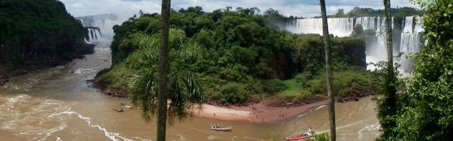

Kom alles te weten over het klimaat binnen Zuid-Amerika.
Zuid-Amerika ligt voor een deel in een warme of tropische zone (tot ongeveer de Steenbokskeerkring) en voor een deel in een gematigde zone (ten zuiden van de Steenbokskeerkring). Vrijwel alle klimaatzones (van tropisch regenklimaat tot polair toendraklimaat) komen voor in Zuid-Amerika. Vgl. de klimaatclassificatie van Köppen.
Zo heeft de Andes een hooggebergteklimaat. Ten oosten van de Andes zijn de variaties in de natuurlijke begroeiing groot. Het grootste gedeelte van het continent heeft een tropisch klimaat met als natuurlijke begroeiing regenwoud. In het zuiden gaat het regenwoud over in de pampa's en nog zuidelijker in nog gematigder begroeiing.
Bron tekst  Bron foto